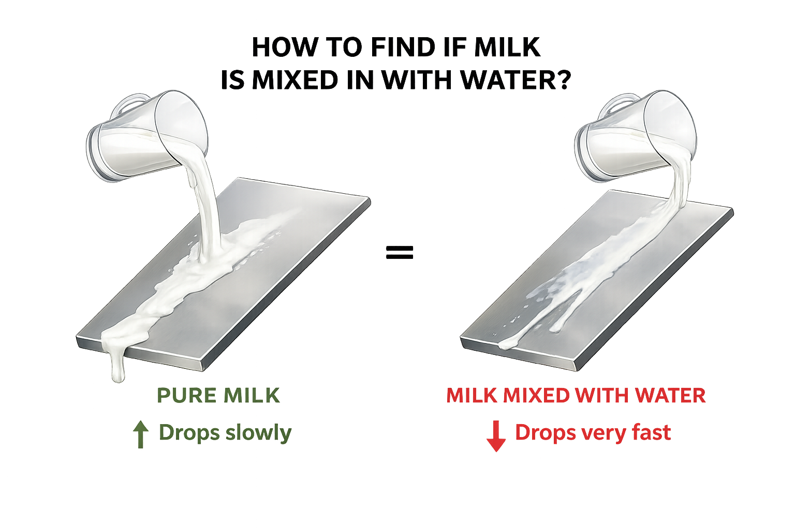

Milk Check
How to find if milk is mixed with water?

Take some milk and pour it on a smooth surface, then gently tilt that surface and observe how it behaves.
If the milk is mixed with water, the drops run down very fast. If the milk moves slowly with a richer trail, it is a stronger sign that the milk is pure and has not been diluted.